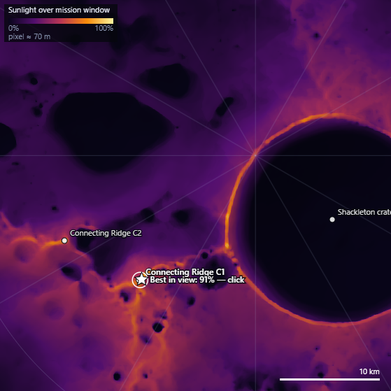

NASA Space Apps Challenge 2026 · Lunar Landing Site Navigator
Penumbra
Will we have power? Can we call home?
Any lunar site, any date: answered in seconds on real NASA terrain.
Team: 42 WW · Kazakhstan
Nikita Chesnokov · Gleb Savelyev
Challenge: Lunar Landing Site NavigatorNASA LRO LOLA topography · NASA/JPL Horizons · DSN